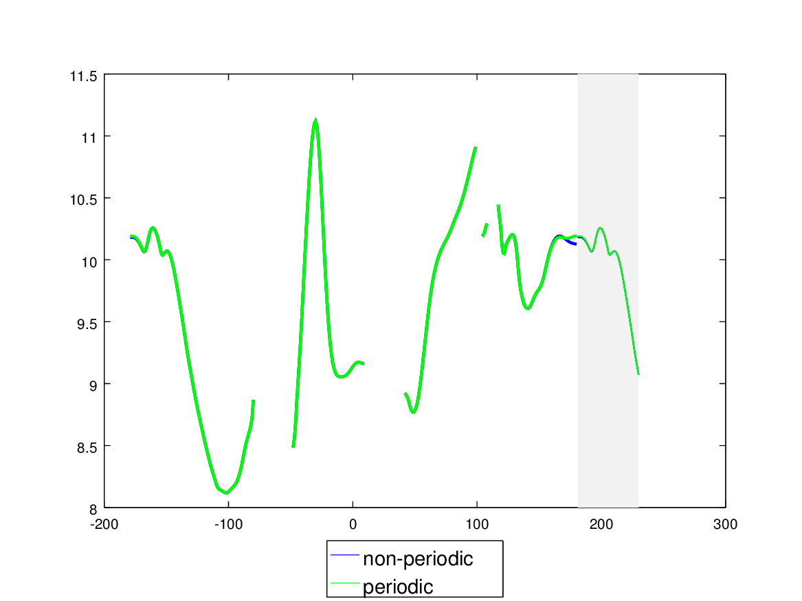

class: center, middle # Extension of DIVA to higher dimensions (diva-nd) Alexander Barth --- class: middle # Objectives * Introduction to the matlab/octave code of diva-nd * Show how to make a 2D analysis (longitude, latitude) * How to handle periodic boundary conditions * Show how to make a 3D analysis (longitude, latitude, time) --- # Example data set: ARGO * Data file is `argo_data.mat` * Data can be loaded with: ```matlab load /path/to/argo_data.mat ``` where you have to use the appropriate file path and replace `/path/to`. * Use `whos` to list the loaded variables: ``` Attr Name Size Bytes Class ==== ==== ==== ===== ===== Tobs 1x11000 88000 double latobs 1x11000 88000 double lonobs 1x11000 88000 double timeobs 1x11000 88000 double ``` * lonobs: the longitude of the observations (in degrees North) * latobs: the latitude of the observations (in degrees East) * timeobs: the time of the observations (days, since January 0, 0000 i.e. 31 December 0001 BC UTC) * Tobs: surface temperature (in degrees Celsius), only 'good data' according to the quality flags, average between 0 and 10 meters --- * The time in matlab/octave can be manipulated with the commands `datenum`, `datevec`, and `datestr` (use e.g. `help datenum`). * What is the time range of the observations? ```matlab datestr(min(timeobs)) datestr(max(timeobs)) ``` --- # Exercise 1. Visualize bathymery 1. Create a land-sea mask (1 ocean deeper than 5 meters and 0 otherwise) 1. Visualize the data -> problem of outliers 1. Either remove the outliers per hand or... 1. Make a first 2D analysis (including outliers), with a rather long correlation length (3000 km) and low signal-to-noise ratio (1) 1. Visualize the results 1. Take the periodicity of the domain into account (parameter `moddim`) 1. Check result visually 1. Compute the anomaly between observation and this primilinary analysis 1. Exclude data if difference is too large (e.g. 10°C) 1. Repeat the analysis with "good" data (at first with the same correlation length-scale and signal-to-noise) 1. Try different values of these parameters. 1. Compute the anomaly between observation and this new 2D analysis 1. Make a 3D-analysis valid for the time 01-Jan-2016, 11-Jan-2016, 21-Jan-2016 and 31-Jan-2016 with a spatial correlation length-scale of 1000km, temporal scale of 15 days and signal-to-noise of 5. 1. Try different values of these parameters. 1. Exclude a random 10% from the data and compare the analysis to the withheld data 1. Optimize the analysis parameters by minimizing the difference between the analysis and the withheld data --- # Matlab/Octave commands to know * `load`: load a .mat file * `scatter`, or rather the provided `myscatter`: to plot the in situ data * `ncread`: load a NetCDF variable * `pcolor`: plot a gridded field (followed by `shading flat` to supress the grid lines) * `colorbar`: show the colorbar * `double`: convert a binary data (0 or 1) to floating numbers that you can plot with `pcolor` * `mean`: the mean of elements in a vector or matrix * `abs`: absolute value of a the elements in a vector or matrix * `repmat`: extend a variable along a dimension * `ndgrid`: create a regular grid from a vector of coordinate values In any case: try `help command_name` or ask us. --- # Diva commands to know * `divand_metric`: Compute metric scale factors pm and pn based on the 2d-arrays longitude lon and latitude lat. The variables pm and pn represent the inverse of the local resolution in meters using the mean Earth radius. ```matlab [pm,pn] = divand_metric(lon,lat); ``` * lon(i,j),lat(i,j) is the longitude and latitude of the grid cell (i,j) --- # divand for 2D/3D * In the following n = 2 for a 2D analysis and 3 for a 3D analysis ```matlab Ta = divand(mask,{pm,pn,...},{lon,lat,...},{lonobs,latobs,...},Tanom, {len_lon,len_lat, ...},lambda); ``` * `divand` performs an n-dimensional variational analysis of the observations Tanim located at the coordinates `{lonobs,latobs,...}`. The array `Ta` represent the interpolated field at the grid defined by the coordinates `{lon,lat,...}` and the scales factors `{pm,pn,...}`. * `mask`: binary mask delimiting the domain. 1 is inside and 0 outside. For oceanographic application, this is the land-sea mask. * `{pm,pn,...}`: scale factor of the grid. pmn is a cell array with n elements. Every element represents the scale factor of the corresponding dimension. Its inverse is the local resolution of the grid in a particular dimension. --- # divand for 2D/3D * `{lon,lat,...}`: cell array with n elements. Every element represents a coordinate of the final grid on which the observations are interpolated * `{lonobs,latobs,...}`: cell array with n elements. Every element represents a coordinate of the observations * `Tanom`: value of the observations __minus__ the background estimate (m-by-1 array). * `{len_lon,len_lat, ...}`: n-dimensional cell array of the correlation length * `lambda`: signal-to-noise ratio of observations (if `lambda` is a scalar). The larger this value is, the closer is the field Ta to the observed anomalies. --- # Visualize the data <div style="text-align:center"> </div> -- ```matlab scatter(lonobs,latobs,5,Tobs,'filled') colorbar ``` --- * Force color-bar to 0 - 30 degrees Celsius. <div style="text-align:center"> <img src="Fig/data_distrib2.png" width="700"> </div> -- ```matlab scatter(lonobs,latobs,5,Tobs,'filled') caxis([0 30]) % fix the color-bar range colorbar ``` --- # Outliers * There are some obvious outliers * How to remove these obvious outliers? * using range checks * consistency with near-by observations * consistency with a climatology * ... * We will make an analysis with low signal-to-noise-ratio and exclude observations with a too large deviation from this analysis --- # Bathymetry * We use the global GEBCO bathymetry * Reduced to a resolution of 1° * Load the bathymetry (file `diva_bath.nc`) and visualize it. * Hint: use `ncdisp` to list the variables names and `ncread` to load the variables (including longitude and latitude). --- * Visualize the bathymetry: <div style="text-align:center"> <img src="Fig/bat.png" width="600"> </div> -- ```matlab ncdisp('diva_bath.nc') bat = ncread('diva_bath.nc','bat'); lon = ncread('diva_bath.nc','lon'); lat = ncread('diva_bath.nc','lat'); [lon,lat] = ndgrid(lon,lat); pcolor(lon,lat,bat), shading flat,colorbar ``` --- # Land-sea mask * Create a mask: * 0 (false): shallower than 5 meters * 1 (true): deeper than 5 meters or equal to 5 meters <div style="text-align:center"> <img src="Fig/mask.png" width="500"> </div> -- ```matlab mask = bat <= -5; pcolor(lon,lat,double(mask)), shading flat, colorbar ``` --- # Local resolution of the grid * compute grid metric * `pm` and `pn` are in meters^-1 * `pm` inceases toward the poles and `pn` is just constant for a spherical mesh. <div style="text-align:center"> <img src="Fig/pm.png" width="400"> </div> ```matlab [pm,pn] = divand_metric(lon,lat); pcolor(lon,lat,pm), shading flat,colorbar ``` --- # Make the analysis * First we make a 2D analysis (ignoring the exact time) ```matlab % compute mean and anomalies Tmean = mean(Tobs); Tanom = Tobs - mean(Tobs); % correlation length (in meters) len = 3000e3; % signal-to-noise ratio lambda = 1; % make analysis Ta = divand(mask,{pm,pn},{lon,lat},{lonobs,latobs},... Tanom,len,lambda); ``` --- # The analysis * Anomalies <div style="text-align:center"> <img src="Fig/temp_anom.png" width="700"> </div> --- * Add the mean back ```matlab Ta2 = Tam + Tmean; ``` <div style="text-align:center"> <img src="Fig/temp_analysis.png" width="700"> </div> --- # Issue at periodic boundaries <div style="text-align:center">  </div> ```matlab Tam = divand(mask,{pm,pn},{lon,lat},{lonobs,latobs},Tanom,... len,lambda,'moddim',[360 0]); ``` --- # Difference between observation and analysis * Interpolate the analysis at the location of the observations and compute the difference: ```matlab Tanom2 = Tobs - interpn(lon,lat,Ta2,lonobs,latobs); ``` * How to take into account that longitude dimension is periodic? -- ```matlab Tanom2 = Tobs - interpn([lon(end,:)-360; lon],... [lat(end,:); lat], ... [Ta2(end,:); Ta2],lonobs,latobs); ``` --- * Visualize the anomalies: <div style="text-align:center"> </div> -- ```matlab scatter(lonobs(~isnan(Tanom2)),latobs(~isnan(Tanom2)),5,... Tanom2(~isnan(Tanom2)),'filled') colorbar ``` --- # Remove outliers * Keep only data where the anomaly is smaller than 10 degrees -- ```matlab keep = abs(Tanom2) < 10 | isnan(Tanom2); ``` * Show excluded data: <div style="text-align:center"> </div> -- ```matlab scatter(lonobs(~keep),latobs(~keep),5,Tobs(~keep),'filled') colorbar ``` --- # Retained data * Show keep data: <div style="text-align:center"> <img src="Fig/good.png" width="500"> </div> -- ```matlab scatter(lonobs(keep),latobs(keep),5,Tobs(keep),'filled') colorbar ``` --- * Update `lonobs`, `latobs`, `timeobs`, `Tobs` -- ```matlab lonobs = lonobs(keep); latobs = latobs(keep); timeobs = timeobs(keep); Tobs = Tobs(keep); ``` * re-do the analysis with clean data, and a signal-to-noise ratio of 10, add the mean back -- ```matlab Tmean = mean(Tobs); Tanom = Tobs - mean(Tobs); % signal-to-noise ratio lambda = 10; % make analysis Tam = divand(mask,{pm,pn},{lon,lat},{lonobs,latobs},Tanom,len,... lambda,'moddim',[360 0]); % add mean back Ta2 = Tam + Tmean; ``` --- # 3D analysis * We use the 2D analysis as a background estimate * Compute the anomalies compared to this background estimate -- ```matlab Tanom2 = Tobs - interpn([lon(end,:)-360; lon],[lat(end,:); lat],... [Ta2(end,:); Ta2],lonobs,latobs); ``` * Time dimensions ```matlab time = datenum(2016,1,1):10:datenum(2016,2,5); N = length(time); ``` * Extend the `mask`, `lon` and `lat` with the extra time dimensions (calling the variables `mask3d`, `lon3d` and `lat3d`.) -- ```matlab mask3d = repmat(mask,[1 1 N]); lon3d = repmat(lon,[1 1 N]); lat3d = repmat(lat,[1 1 N]); ``` --- * Define a variable `time3d` which has the same size as the other 3d variables and which varies only over the 3rd dimensions as the variable `time`. -- ```matlab time3d = repmat(reshape(time,[1 1 N]),[size(lon,1) size(lon,2) 1]); ``` * Creating the corresponding variables for the metric `pm3d`, `pn3d` and `po3d`: -- ```matlab pm3d = repmat(pm,[1 1 N]); % m^-1 pn3d = repmat(pn,[1 1 N]); % m^-1 po3d = ones(size(lon3d))/(time(2)-time(1)); % day^-1 ``` * Set the spatial and temporal correlation lengths and the signal-to-noise ratio ```matlab % temporal correlation length (same units as 1/po) len3 = 1000e3; lentime = 15; lambda = 5; ``` --- # Make the 3d analysis * Launch divand with these variables ```matlab Ta3 = divand(mask3d,{pm3d,pn3d,po3d},{lon3d,lat3d,time3d},... {lonobs,latobs,timeobs},... Tanom2,{len3,len3,lentime},lambda); ``` * Add the mean back -- ```matlab Ta3 = Ta3 + repmat(Ta2,[1 1 N]); ``` * Plot all time instances (with the same colorbar) -- ```matlab ca = [min(Ta3(:)) max(Ta3(:))]; for i = 1:N clf pcolor(lon,lat,Ta3(:,:,i)), shading flat, caxis(ca); colorbar title(datestr(time(i))) print('-dpng',['Fig/temp_analysis' ... datestr(time(i),'yyyy-mm-dd') '.png']); end ``` --- # Additional tasks * Put all the command in a script (except for the plots) to automate the analysis * Try different parameters (correlation length, signal-to-noise-ratio, outliers threshold) * Cross-validation: * exclude a random 10% from the data and compare the analysis to the withheld data * optimize the analysis parameters by minimizing the difference